输入与响应图
红色叠加区域是梁筋±10cm图谱排除掩膜，只用于最终绑扎点排除，不删除整条钢筋线。
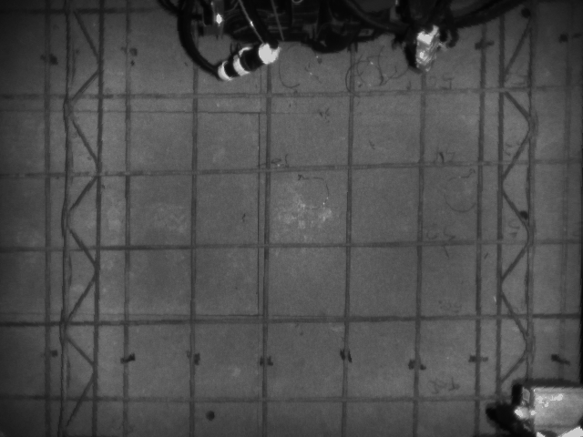
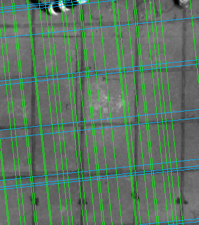
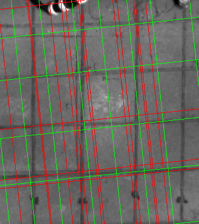
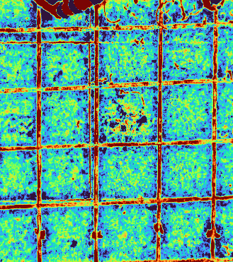
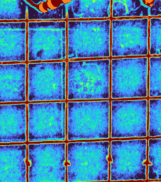
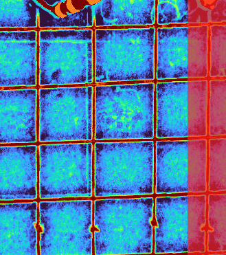
01 当前主链：theta/rho 直线族
24 points当前 active PR-FPRG 输出，保持 spacing_pruned 后的两组直线族。
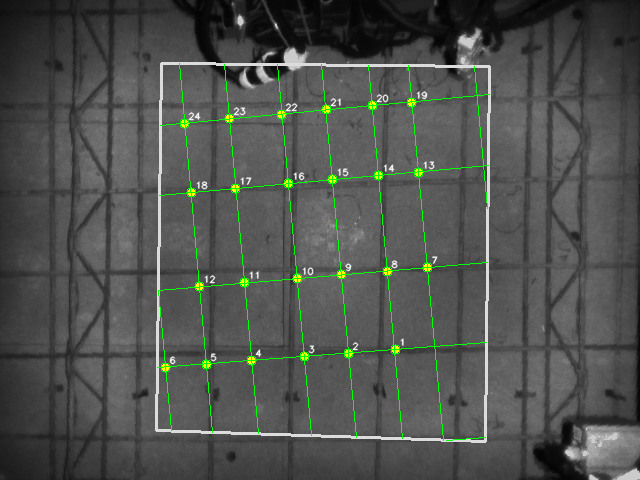
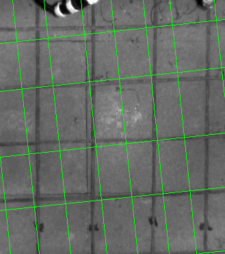
{"beam_bands": [{"axis": "x", "side": "max", "start": 293, "end": 311, "width": 19, "peak": 1.423411250114441, "component_start": 296, "component_end": 308}], "beam_exclusion_margin_mm": 100.0, "beam_filtered_point_count": 3, "curve_metrics": {}}
[{"angle_deg": 84.0, "rhos": [-311.6, -246.68, -207.43, -161.42, -116.89, -63.82, -18.31, 23.97], "line_count": 8, "curve_coverage": null}, {"angle_deg": 174.0, "rhos": [-398.32, -305.51, -227.25, -132.0, -62.17], "line_count": 5, "curve_coverage": null}]
03 局部 ridge 贪心曲线
24 points以当前 theta/rho 为拓扑骨架，每个采样点沿法线独立找局部响应中心。
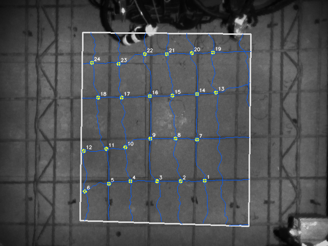
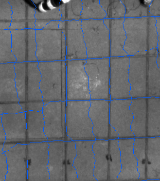
{"beam_bands": [{"axis": "x", "side": "max", "start": 293, "end": 311, "width": 19, "peak": 1.423411250114441, "component_start": 296, "component_end": 308}], "beam_exclusion_margin_mm": 100.0, "beam_filtered_point_count": 4, "curve_metrics": {"coverage_mean": 0.965, "score_mean": 0.635, "abs_offset_mean": 3.703, "abs_offset_p95": 8.8, "wiggle_mean": 1.005}}
[{"angle_deg": 84.0, "rhos": [-311.6, -246.68, -207.43, -161.42, -116.89, -63.82, -18.31, 23.97], "line_count": 8, "curve_coverage": 0.945}, {"angle_deg": 174.0, "rhos": [-398.32, -305.51, -227.25, -132.0, -62.17], "line_count": 5, "curve_coverage": 0.998}]
04 最小代价路径曲线
23 points仍沿法线找 ridge，但用动态规划约束相邻采样点偏移连续。
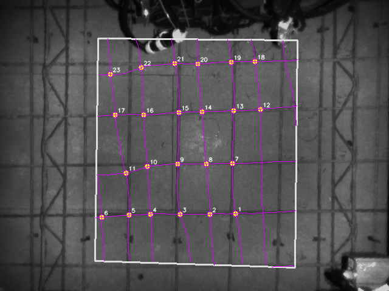
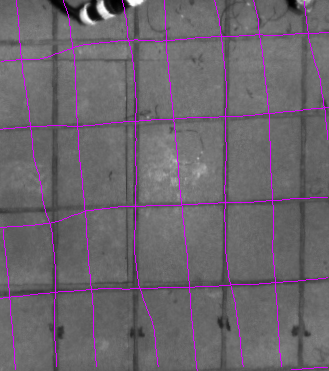
{"beam_bands": [{"axis": "x", "side": "max", "start": 293, "end": 311, "width": 19, "peak": 1.423411250114441, "component_start": 296, "component_end": 308}], "beam_exclusion_margin_mm": 100.0, "beam_filtered_point_count": 4, "curve_metrics": {"coverage_mean": 0.884, "score_mean": 0.588, "abs_offset_mean": 4.083, "abs_offset_p95": 9.0, "wiggle_mean": 0.063}}
[{"angle_deg": 84.0, "rhos": [-311.6, -246.68, -207.43, -161.42, -116.89, -63.82, -18.31, 23.97], "line_count": 8, "curve_coverage": 0.849}, {"angle_deg": 174.0, "rhos": [-398.32, -305.51, -227.25, -132.0, -62.17], "line_count": 5, "curve_coverage": 0.94}]
05 ridge 约束曲线
24 points动态规划分数加入“中间强、两侧弱”的局部 ridge 判断。
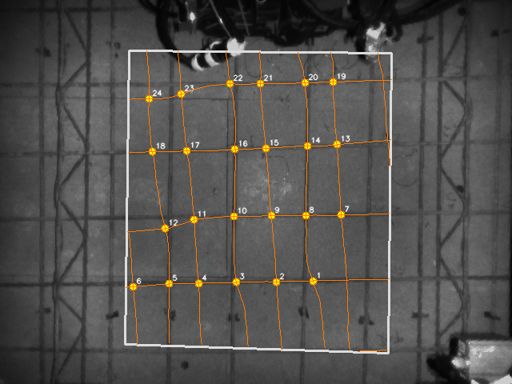
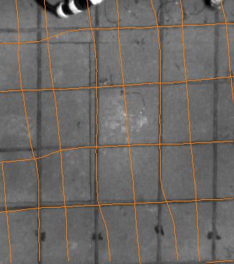
{"beam_bands": [{"axis": "x", "side": "max", "start": 293, "end": 311, "width": 19, "peak": 1.423411250114441, "component_start": 296, "component_end": 308}], "beam_exclusion_margin_mm": 100.0, "beam_filtered_point_count": 3, "curve_metrics": {"coverage_mean": 0.867, "score_mean": 0.577, "abs_offset_mean": 3.607, "abs_offset_p95": 9.0, "wiggle_mean": 0.055}}
[{"angle_deg": 84.0, "rhos": [-311.6, -246.68, -207.43, -161.42, -116.89, -63.82, -18.31, 23.97], "line_count": 8, "curve_coverage": 0.823}, {"angle_deg": 174.0, "rhos": [-398.32, -305.51, -227.25, -132.0, -62.17], "line_count": 5, "curve_coverage": 0.937}]
06 红外辅助曲线
24 points沿当前底层组合响应做同拓扑曲线收束，保留为对照候选。
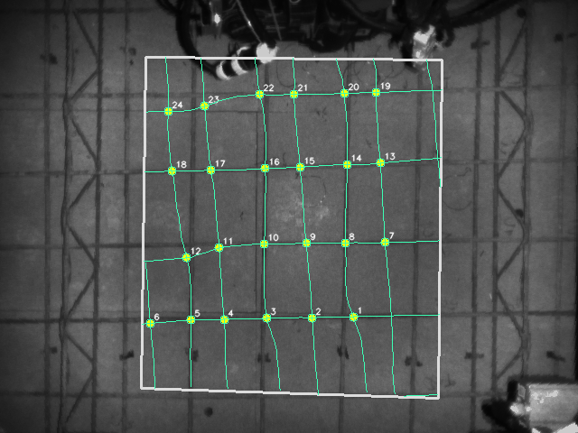
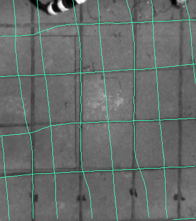
{"beam_bands": [{"axis": "x", "side": "max", "start": 293, "end": 311, "width": 19, "peak": 1.423411250114441, "component_start": 296, "component_end": 308}], "beam_exclusion_margin_mm": 100.0, "beam_filtered_point_count": 3, "curve_metrics": {"coverage_mean": 0.867, "score_mean": 0.577, "abs_offset_mean": 3.607, "abs_offset_p95": 9.0, "wiggle_mean": 0.055}}
[{"angle_deg": 84.0, "rhos": [-311.6, -246.68, -207.43, -161.42, -116.89, -63.82, -18.31, 23.97], "line_count": 8, "curve_coverage": 0.823}, {"angle_deg": 174.0, "rhos": [-398.32, -305.51, -227.25, -132.0, -62.17], "line_count": 5, "curve_coverage": 0.937}]